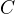
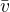
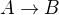
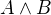
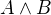
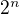
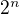

Logic and Proof
6 Semantics of Propositional Logic
Classically, we think of propositional variables as ranging over
statements that can be true or false. And, intuitively, we think of
a proof system as telling us what propositional formulas have to be
true, no matter what the variables stand for. For example, the fact
that we can prove  from the hypotheses  ,
,  , and seems to tell us that whenever the hypotheses are true, then
has to be true as well.
, and seems to tell us that whenever the hypotheses are true, then
has to be true as well.
Making sense of this involves stepping outside the system and giving an account of truth — more precisely, the conditions under which a propositional formula is true. This is one of the things that symbolic logic was designed to do, and the task belongs to the realm of semantics. Formulas and formal proofs are syntactic notions, which is to say, they are represented by symbols and symbolic structures. Truth is a semantic notion, in that it ascribes a type of meaning to certain formulas.
Syntactically, we were able to ask and answer questions like the following:
- Given a set of hypotheses,
 , and a formula, , can we
derive from ?
, and a formula, , can we
derive from ? - What formulas can be derived from ?
- What hypotheses are needed to derive ?
The questions we consider semantically are different:
- Given an assignment of truth values to the propositional
variables occurring in a formula , is true or false?
- Is there any truth assignment that makes true?
- Which are the truth assignments that make true?
In this chapter, we will not provide a fully rigorous mathematical treatment of syntax and semantics. That subject matter is appropriate to a more advanced and focused course on mathematical logic. But we will discuss semantic issues in enough detail to give you a good sense of what it means to think semantically, as well as a sense of how to make pragmatic use of semantic notions.
6.1 Truth Values and Assignments
The first notion we will need is that of a truth value. We have
already seen two, namely, "true" and "false." We will use the symbols
and  to represent these in informal mathematics. These
are the values that
to represent these in informal mathematics. These
are the values that  and
and  are intended to denote in
natural deduction, and
are intended to denote in
natural deduction, and true and false are intended to denote in
Lean.
In this text, we will adopt a "classical" notion of truth, following
our discussion in Chapter 5. This can be understood in various ways,
but, concretely, it comes down to this: we will assume that any
proposition is either true or false (but, of course, not both). This
conception of truth is what underlies the law of the excluded middle,
 . Semantically, we read this sentence as saying "either
is true, or
. Semantically, we read this sentence as saying "either
is true, or  is true." Since, in our semantic
interpretation, is true exactly when is false, the law of
the excluded middle says that is either true or false.
is true." Since, in our semantic
interpretation, is true exactly when is false, the law of
the excluded middle says that is either true or false.
The next notion we will need is that of a truth assignment, which is
simply a function that assigns a truth value to each element of a
propositional variables. In this section, we will distinguish between
propositional variables and arbitrary formulas by using letters for the former and  for the latter. For
example, the function
for the latter. For
example, the function  defined by
defined by
is a truth assignment for the set of variables .
Intuitively, a truth assignment describes a possible "state of the world." Going back to the Malice and Alice puzzle, let's suppose the following letters are shorthand for the statements:
 := Alice's brother was the victim
:= Alice's brother was the victim := Alice was the killer
:= Alice was the killer := Alice was in the bar
:= Alice was in the bar
In the world described by the solution to the puzzle, the first and
third statements are true, and the second is false. So our truth
assignment gives the value to and , and the value
to .
Once we have a truth assignment to a set of propositional
variables, we can extend it to a valuation function , which
assigns a value of true or false to every propositional formula that
depends only on these variables. The function is defined
recursively, which is to say, formulas are evaluated from the bottom
up, so that value assigned to a compound formula is determined by the
values assigned to its components. Formally, the function is defined
as follows:
- , where is any propositional variable.
- if is , and vice
versa.
 if and are both , and otherwise.
if and are both , and otherwise.- if at least one of and
 is ; otherwise .
is ; otherwise . - if either is or
is , and otherwise. (Equivalently,
if is and
is , and otherwise.)
The rules for conjunction and disjunction are easy to understand. "
and " is true exactly when and are both true; " or "
is true when at least one of or is true.
Understanding the rule for implication is trickier. People are often surprised to hear that any if-then statement with a false hypothesis is supposed to be true. The statement "if I have two heads, then circles are squares" may sound like it ought to be false, but by our reckoning, it comes out true. To make sense of this, think about the difference between the two sentences:
- "If I have two heads, then circles are squares."
- "If I had two heads, then circles would be squares."
The second sentence is an example of a counterfactual implication. It asserts something about how the world might change, if things were other than they actually are. Philosophers have studied counterfactuals for centuries, but mathematical logic is concerned with the first sentence, a material implication. The material implication asserts something about the way the world is right now, rather than the way it might have been. Since it is false that I have two heads, the statement "if I have two heads, then circles are squares" is true.
Why do we evaluate material implication in this way? Once again, let us consider the true sentence "every natural number that is prime and greater than two is odd." We can interpret this sentence as saying that all of the (infinitely many) sentences in this list are true:
- if 0 is prime and greater than 2, then 0 is odd
- if 1 is prime and greater than 2, then 1 is odd
- if 2 is prime and greater than 2, then 2 is odd
- if 3 is prime and greater than 2, then 3 is odd
- …
The first sentence on this list is a lot like our "two heads" example, since both the hypothesis and the conclusion are false. But since it is an instance of a statement that is true in general, we are committed to assigning it the value . The second sentence is a different: the hypothesis is still false, but here the conclusion is true. Together, these tell us that whenever the hypothesis is false, the conditional statement should be true. The fourth sentence has a true hypothesis and a true conclusion. So from the second and fourth sentences, we see that whenever the conclusion is true, the conditional should be true as well. Finally, it seems clear that the sentence "if 3 is prime and greater than 2, then 3 is even" should not be true. This pattern, where the hypothesis is true and the conclusion is false, is the only one for which the conditional will be false.
Let us motivate the semantics for material implication another way,
using the deductive rules described in the last chapter. Notice that,
if is true, we can prove  without any assumptions about
.
This follows from the proper reading of the implication introduction
rule: given , one can always infer , and then cancel an
assumption , if there is one. If was never used in the
proof, the conclusion is simply weaker than it needs to be. This
inference is validated in Lean:
Similarly, if is false, we can prove without any
assumptions about :

In Lean:
Finally, if is true and is false, we can prove :
Once again, in Lean:
Now that we have defined the truth of any formula relative to a truth
assignment, we can answer our first semantic question: given an
assignment of truth values to the propositional variables occurring
in some formula , how do we determine whether or not is
true? This amounts to evaluating , and the recursive
definition of gives a recipe: we evaluate the expressions
occurring in from the bottom up, starting with the propositional
variables, and using the evaluation of an expression's components to
evaluate the expression itself. For example, suppose our truth
assignment makes and true and false. To evaluate under , note that the expression  comes out false and the expression  comes out
true. Since a disjunction "false or true" is true, the entire formula
is true.
comes out false and the expression  comes out
true. Since a disjunction "false or true" is true, the entire formula
is true.
We can also go in the other direction: given a formula, we can attempt
to find a truth assignment that will make it true (or false). In fact,
we can use Lean to evaluate formulas for us. In the example that
follows, you can assign any set of values to the proposition symbols
A, B, C, D, and E. When you run Lean on this input, the
output of the eval statement is the value of the expression.
Try varying the truth assignments, to see what happens. You can add your own formulas to the end of the input, and evaluate them as well. Try to find truth assignments that make each of the formulas tested above evaluate to true. For an extra challenge, try finding a single truth assignment that makes them all true at the same time.
6.2 Truth Tables
The second and third semantic questions we asked are a little trickier
than the first. Given a formula , is there any truth assignment that
makes true? If so, which truth assignments make true?
Instead of considering one particular truth
assignment, these questions ask us to quantify over all possible truth
assignments.
Of course, the number of possible truth assignments depends on the
number of propositional letters we're considering. Since each letter
has two possible values,  letters will produce  possible truth
assignments. This number grows very quickly, so we'll mostly look at
smaller formulas here.
letters will produce  possible truth
assignments. This number grows very quickly, so we'll mostly look at
smaller formulas here.
We'll use something called a truth table to figure out when, if ever, a formula is true. On the left hand side of the truth table, we'll put all of the possible truth assignments for the present propositional letters. On the right hand side, we'll put the truth value of the entire formula under the corresponding assignment.
To begin with, truth tables can be used to concisely summarize the semantics of our logical connectives:
We will leave it to you to write the table for , as an easy
exercise.
For compound formulas, the style is much the same. Sometimes it can be helpful to include intermediate columns with the truth values of subformulas:
By writing out the truth table for a formula, we can glance at the rows and see which truth assignments make the formula true. If all the entries in the final column are , as in the above example, the formula is said to be valid.
6.3 Soundness and Completeness
Fix a deductive system, such as natural deduction. A propositional
formula is said to be provable if there is a formal proof of it in
the system. A propositional formula is said to be a tautology, or
valid, if it is true under any truth assignment. Provability is a
syntactic notion, insofar as it asserts the existence of a syntactic
object, namely, a proof. Validity is a semantic notion, insofar as it
has to do with truth assignments and valuations. But, intuitively,
these notions should coincide: both express the idea that a formula
has to be true, or is necessarily true, and one would expect a
good proof system to enable us to derive the valid formulas.
Because of the way we have chosen our inference rules and defined the notion of a valuation, this intuition holds true. The statement that every provable formula is valid is known as soundness, and the statement that we can prove every valid formula is known as completeness.
These notions extend to provability from hypotheses. If is a
set of propositional formulas and is a propositional formula, then
is said to be a logical consequence of if, given any
truth assignment that makes every formula in true, is
true as well. In this extended setting, soundness says that if is
provable from , then is a logical consequence of
. Completeness runs the other way: if is a logical
consequence of , it is provable from .
Notice that with the rules of natural deduction, a formula is
provable from a set of hypotheses if and
only if the formula is
provable outright, that is, from no hypotheses. So, at least for
finite sets of formulas , the two statements of soundness and
completeness are equivalent.
Proving soundness and completeness belongs to the realm of metatheory, since it requires us to reason about our methods of reasoning. This is not a central focus of this book: we are more concerned with using logic and the notion of truth than with establishing their properties. But the notions of soundness and completeness play an important role in helping us understand the nature of the logical notions, and so we will try to provide some hints here as to why these properties hold for propositional logic.
Proving soundness is easier than proving completeness. We wish to show
that whenever is provable from a set of hypotheses, , then
is a logical consequence of . In a later chapter, we will
consider proofs by induction, which allows us to establish a property
holds of a general collection of objects by showing that it holds of
some "simple" ones and is preserved under the passage to objects that
are more complex. In the case of natural deduction, it is enough to
show that soundness holds of the most basic proofs — using the
assumption rule — and that it is preserved under each rule of
inference. The base case is easy: the assumption rule says that is
provable from hypothesis , and clearly every truth assignment that
makes true makes true. The inductive steps are not much
harder; it involves checking that the rules we have chosen mesh with
the semantic notions. For example, suppose the last rule is the and
introduction rule. In that case, we have a proof of from some
hypotheses , and a proof of from some hypotheses  ,
and we combine these to form a proof of from the
hypotheses in , that is, the hypotheses in
both. Inductively, we can assume that is a logical consequence of
and that is a logical consequence of . Let be
any truth assignment that makes every formula in
true. Then by the inductive hypothesis, we have that it makes
true, and true as well. By the definition of the valuation
function, , as required.
,
and we combine these to form a proof of from the
hypotheses in , that is, the hypotheses in
both. Inductively, we can assume that is a logical consequence of
and that is a logical consequence of . Let be
any truth assignment that makes every formula in
true. Then by the inductive hypothesis, we have that it makes
true, and true as well. By the definition of the valuation
function, , as required.
Proving completeness is harder. It suffices to show that if is any
tautology, then is provable. One strategy is to show that natural
deduction can simulate the method of truth tables. For example,
suppose is build up from propositional variables and . Then
in natural deduction, we should be able to prove
with one disjunct for each line of the truth table. Then, we should
be able to use each disjunct to "evaluate" each expression occurring
in , proving it true or false in accordance with its valuation,
until we have a proof of itself.
A nicer way to proceed is to express the rules of natural deduction
in a way that allows us to work backwards from in search of a
proof. In other words, first, we give a procedure for constructing a
derivation of by working backwards from . Then we argue that if
the procedure fails, then, at the point where it fails, we can find a
truth assignment that makes false. As a result, if every truth
assignment makes true, the procedure returns a proof of .
6.4 Exercises
- Show that ,
 , and
are logically equivalent, by writing out the truth table and
showing that they have the same values for all truth assignments.
, and
are logically equivalent, by writing out the truth table and
showing that they have the same values for all truth assignments. - Write out the truth table for .
- Show that and are equivalent, by writing out the truth tables and showing that they have the same values for all truth assignments.
Does the following entailment hold?
Justify your answer by writing out the truth table (sorry, it is long). Indicate clearly the rows where both hypotheses come out true.